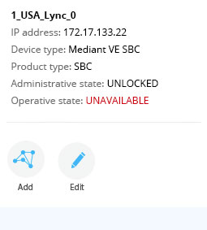

<!DOCTYPE html>
<html lang="en">

<head>
	<meta charset="UTF-8">
	<title>Document</title>
	<link rel="stylesheet" href="https://unpkg.com/leaflet@1.0.3/dist/leaflet.css" />
	<style type="text/css">
		html,
		body,
		#map {
			height: 100%;
		}
		
		body {
			margin: 0;
		}
		.leaflet-popup-content {
			width: 256px !important;
		}

		.link-agg-el {
			background: #52ab00;
			width: auto !important;
			height: auto !important;
			padding: 2px 8px;
			border-radius: 3px;
			color: #fff;
		}
	</style>
</head>

<body>

	<div id="map"></div>

	<script src="https://unpkg.com/leaflet@1.0.3/dist/leaflet.js"></script>
	<script src="scripts/leaflet-providers.js"></script>
	<script src="scripts/geo.js"></script>

	<script type="text/javascript">
		var map;
		var geoPoints;
		var geoLinks;
		var mapLayers = [];

		// icons
		var LeafIcon = L.Icon.extend({
			options: {
				shadowUrl: 'images/shadow.png',
				iconSize:     [45, 45], // size of the icon
				shadowSize:   [50, 50], // size of the shadow
				iconAnchor:   [27, 50], // point of the icon which will correspond to marker's location
				shadowAnchor: [25, 55],  // the same for the shadow
				popupAnchor:  [-7, -56] // point from which the popup should open relative to the iconAnchor
			}
		});

		var iconSBC = new LeafIcon({iconUrl: 'images/sbc.png'});
		var iconGW = new LeafIcon({iconUrl: 'images/gw.png'});
		var iconUnknown = new LeafIcon({iconUrl: 'images/unknown.png'});
		var linkAggIcon = L.divIcon({
			className: 'link-agg-el',
		    html: '10/13'
		});

		function initmap() {
			// set up the map
			map = new L.Map('map');

			// create the tile layer with correct attribution
			var osmUrl = 'http://{s}.tile.openstreetmap.org/{z}/{x}/{y}.png';
			var osmAttrib = 'Map data © <a href="http://openstcontaineetmap.org">OpenStreetMap</a> contributors';
			var osm = new L.TileLayer(osmUrl, { minZoom: 3, maxZoom: 19, attribution: osmAttrib });

			// start the map in Israel
			map.setView(new L.LatLng(31.046051, 34.851612), 9);
			map.addLayer(osm);
		}


		initmap();

		// Icons


		// adding points of devices
		geoPoints.forEach(point => {
			var pointll = new L.LatLng(point.lat, point.lon, true);
			var icon = null;
			switch(point.productType) {
				case 'SBC':
					icon = iconSBC;
					break;
				case 'GW':
					icon = iconGW;
					break;
				case 'UNKNOWN':
					icon = iconUnknown;
					break;
				default:
					icon = iconUnknown;
			}
			var marker = new L.Marker(pointll, {icon: icon});
			point.data = point;
			map.addLayer(marker);
			marker.bindPopup('');
			mapLayers.push(marker);
		})

		// adding lines of links
		geoLinks.forEach(link => {
			//getting the from and to points
			//todo - what happens if no from and to
			var pointFrom = geoPoints.find(point => point.id === link.from);
			var pointTo = geoPoints.find(point => point.id === link.to);

			//getting the LatLng of the two points
			var fromll = new L.LatLng(pointFrom.lat, pointFrom.lon, true);
			var toll = new L.LatLng(pointTo.lat, pointTo.lon, true);

			//creating the line between the points
			var linkCoordinates = [fromll, toll]
			var line = new L.polyline(linkCoordinates, {
				color: '#52ab00',
				weight: 3,
				opacity: 0.8,
				smoothFactor: 1,
				lineJoin: 'round'
			});

			//adding the link data
			line.data = link;
			map.addLayer(line);
			mapLayers.push(line);

			// adding link Agg

			console.log('center of link:', line.getBounds().getCenter());
			var linkCenter = line.getBounds().getCenter();

			var linkAgg = new L.Marker(linkCenter, {icon: linkAggIcon});
			linkAgg.data = 'data';
			map.addLayer(linkAgg);
			linkAgg.bindPopup('');
			mapLayers.push(linkAgg);
		})


		//------------------------Leaflet Styles / Skins-------------------------------//

		var defaultLayer = L.tileLayer.provider('OpenStreetMap.Mapnik').addTo(map);

		var baseLayers = {
			'OpenStreetMap Default': defaultLayer,
			'OpenStreetMap German Style': L.tileLayer.provider('OpenStreetMap.DE'),
			'OpenStreetMap Black and White': L.tileLayer.provider('OpenStreetMap.BlackAndWhite'),
			'OpenStreetMap H.O.T.': L.tileLayer.provider('OpenStreetMap.HOT'),
			'Thunderforest OpenCycleMap': L.tileLayer.provider('Thunderforest.OpenCycleMap'),
			'Thunderforest Transport': L.tileLayer.provider('Thunderforest.Transport'),
			'Thunderforest Landscape': L.tileLayer.provider('Thunderforest.Landscape'),
			'Hydda Full': L.tileLayer.provider('Hydda.Full'),
			'Stamen Toner': L.tileLayer.provider('Stamen.Toner'),
			'Stamen Terrain': L.tileLayer.provider('Stamen.Terrain'),
			'Stamen Watercolor': L.tileLayer.provider('Stamen.Watercolor'),
			'Esri WorldStreetMap': L.tileLayer.provider('Esri.WorldStreetMap'),
			'Esri DeLorme': L.tileLayer.provider('Esri.DeLorme'),
			'Esri WorldTopoMap': L.tileLayer.provider('Esri.WorldTopoMap'),
			'Esri WorldImagery': L.tileLayer.provider('Esri.WorldImagery'),
			'Esri WorldTerrain': L.tileLayer.provider('Esri.WorldTerrain'),
			'Esri WorldShadedRelief': L.tileLayer.provider('Esri.WorldShadedRelief'),
			'Esri WorldPhysical': L.tileLayer.provider('Esri.WorldPhysical'),
			'Esri OceanBasemap': L.tileLayer.provider('Esri.OceanBasemap'),
			'Esri NatGeoWorldMap': L.tileLayer.provider('Esri.NatGeoWorldMap'),
			'Esri WorldGrayCanvas': L.tileLayer.provider('Esri.WorldGrayCanvas')
		};

		var overlayLayers = {};

		L.control.layers(baseLayers, overlayLayers, { collapsed: false }).addTo(map);

		// resize layers control to fit into view.
		function resizeLayerControl() {
			var layerControlHeight = document.body.clientHeight - (10 + 50);
			var layerControl = document.getElementsByClassName('leaflet-control-layers-expanded')[0];

			layerControl.style.overflowY = 'auto';
			layerControl.style.maxHeight = layerControlHeight + 'px';
		}
		map.on('resize', resizeLayerControl);
		resizeLayerControl();
	</script>
</body>

</html>